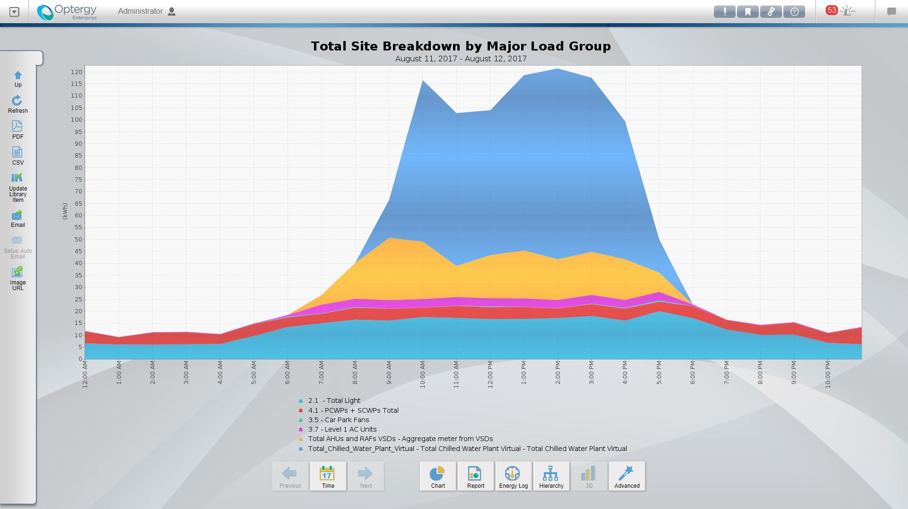
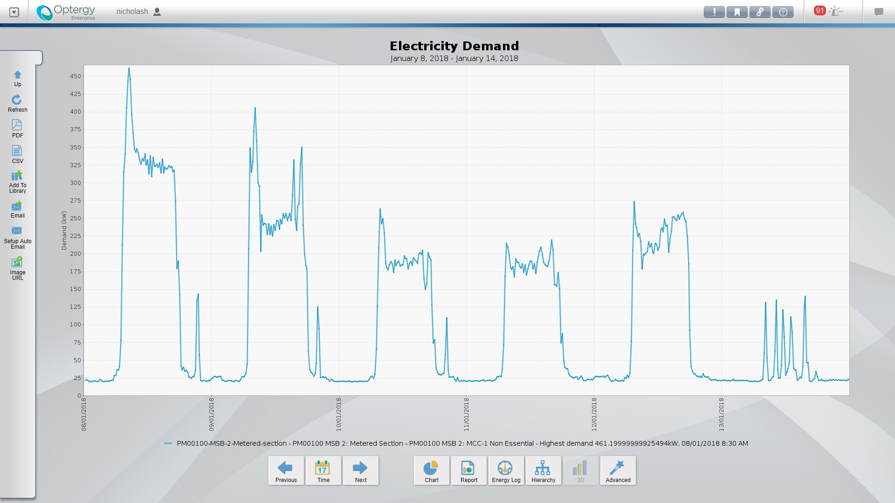
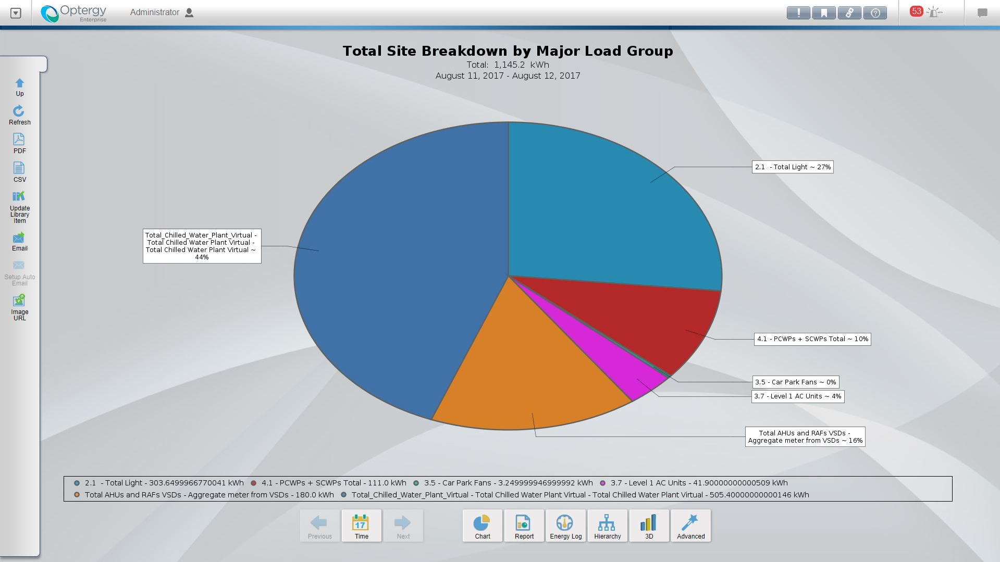
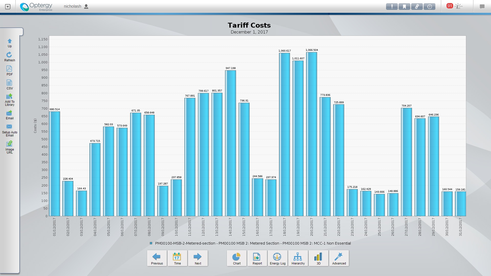

Custom Report
Once a meter is configured, a meter display page is automatically generated based on the meter type template. All data points are logged automatically so engineering time is optimized during project delivery. Users can switch report views by timeframe—day, week, month, year—or by type like consumption, demand, or carbon emissions.



